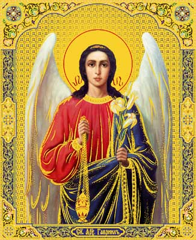

15 01 2012 (1945 дней 20 часов назад)
В канун Рождества Христова в дар Абхазской Православной Церкви - Икона Божией матери "Достойно есть"
Завершена работа над иконой Божией Матери " Достойно есть"
предназначавшаяся для Абхазии. Идея написать эту икону возникла во время
поездки в монастырь - Вознесенская Давидова пустынь, где была освящена
икона Святого Евстафия Апсильского, у иконы Божией Матери именуемой
"Достойно Есть" (Милующая). Икона писанная Ярославскими мастерами-
-иконописцами , освящённая в том же Храме , будет установлена в Храме
Святого Великомученика Евстафия Апсильского.
предназначавшаяся для Абхазии. Идея написать эту икону возникла во время
поездки в монастырь - Вознесенская Давидова пустынь, где была освящена
икона Святого Евстафия Апсильского, у иконы Божией Матери именуемой
"Достойно Есть" (Милующая). Икона писанная Ярославскими мастерами-
-иконописцами , освящённая в том же Храме , будет установлена в Храме
Святого Великомученика Евстафия Апсильского.
Икона Божией Матери Милующая
История иконы Божией Матери «Достойно есть» связана с появлением известного литургического песнопения Православной Церкви «Достойно есть». Предание, сохранившееся на Святой Горе Афон, повествует, что в Х веке, в царствование братьев-царей Василия и Константина Порфирородных и в патриаршество Николая Хрисоверга, неподалеку от монастыря Кареи на Афоне в одной из пещер подвизался старец с послушником. Однажды под воскресный день старец ушел в обитель на всенощное бдение, поручив послушнику остаться в келье и совершить в ней вечернюю службу. При наступлении ночи послушник услышал стук в дверь и, отворив, увидел незнакомого инока, которого принял с христианской любовью.
Во время совершения всенощной службы в монастыре, послушник и его неведомый гость начали молитвенные песнопения. Когда пришло время величать Пресвятую Богородицу, оба обратились к Ее иконе «Милующей», находившейся в келии, и стали петь древнюю песнь святого Космы Маюмского: «Честнейшую Херувим и славнейшую без сравнения Серафим, без истления Бога Слова рождшую, сущую Богородицу Тя величаем». Незнакомец заметил, что у них по- другому величают Божию Матерь, добавляя перед «Честнейшую...» слова «Достойно есть яко во истину блажити Тя Богородицу, присноблаженную и Матерь Бога нашего». От дивного пения инока икона Божией Матери засияла необыкновенным светом, а послушник почувствовал в душе несказанную радость и умиление. Он попросил гостя записать эту песнь, и, поскольку в келии не оказалось нужных для этого принадлежностей, начертание слов нового песнопения произошло также чудесным образом: инок написал свою песнь перстом на каменной плите, которая под его рукой сделалась мягкой, как воск. После этого странник, назвав себя Гавриилом, сразу же стал невидим, а икона еще долгое время излучала чудесный свет.
Чудотворный образ, перед которым была воспета в первый раз новая песнь Богоматери, был перенесен афонской братией в соборный храм Успения Пресвятой Богородицы монастыря Кареи, где и доселе находится в алтаре на горнем месте, источая благодатные дары исцеления всем поклоняющимся ему с верою и любовию.

О Всепетая Мати, рождшая святых
Святейшее Слово, от Ангел
воспеваемая на Небеси и от человек
славимая на земли!
Приими милостиво сие малое моление
наше и даруй душевное
спасение и телесное здравие
всем, верно чтущим Тя и
поющим Богу: Аллилуиа.
Святейшее Слово, от Ангел
воспеваемая на Небеси и от человек
славимая на земли!
Приими милостиво сие малое моление
наше и даруй душевное
спасение и телесное здравие
всем, верно чтущим Тя и
поющим Богу: Аллилуиа.
Празднование иконе совершается 11/ 24 июня.